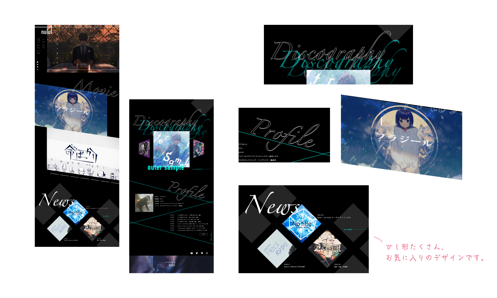
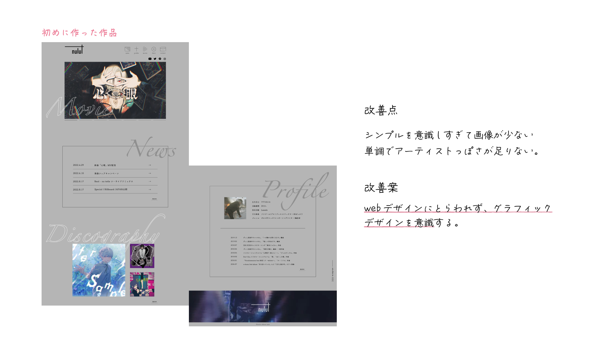
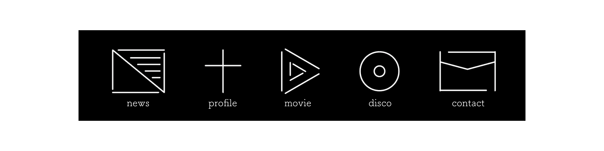
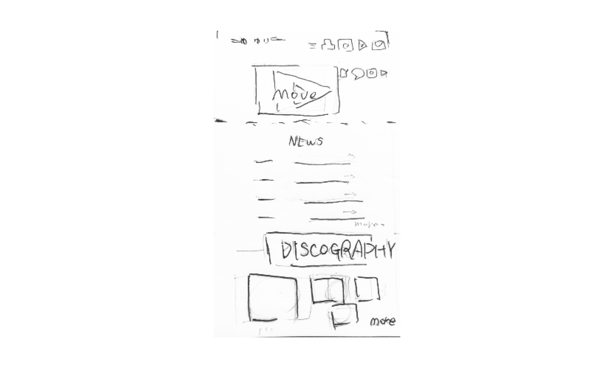

制作内容
好きなアーティストのサイトをデザインする。という課題で作った作品を、改善点をピックアップし、リデザインしたものです。
-
制作目的
アーティストの世界観を表現し、楽曲に興味を持ってもらう
-
コンセプト
カリスマ的で無機質
-
ターゲット
ボーカロイド曲に興味がある方
-
制作期間
2022年8月（1週間）
-
制作ツール


-
使用カラー
#000000 - スタイリッシュ
#00FFF0 - カリスマ
ポイント
1.大胆なレイアウト
・「グラフィックデザイン」を意識して楽曲のサムネイルを大胆に斜めに配置し、単調さを緩和しました。
・堅すぎるデザインを避けるため、タイトルの文字をオブジェクトのように配置しました。

2.改善案
・リデザインということもあり、元のサイトをみて、改善点と改善案を書き出してから制作に取り組みました。

3.オリジナルメニューアイコン
・アーティストの無機質でシンプルな世界観に合わせてメニューのアイコンをIllustratorで作成しました。

手描きラフ
